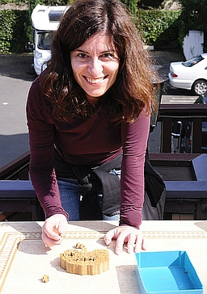

I work as Adviser at the Directorate General Economics of the European Central Bank. I have worked at the ECB since 2000, after my PhD studies at the European University Institute.
After working many years on exchange rates and competitiveness I now focus on inflation. I coordinated the work of expert groups of the European System of Central Banks on low inflation (2017) and exchange rate pass-through (forthcoming).
For more details see my